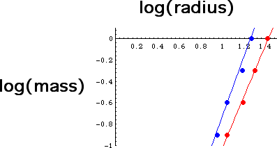

Four paper balls were made from two sheets of stiff copy paper. Four more from two sheets of white lined composition paper.
| Stiff copy paper | Composition paper | ||||||||||||||||||||||||||||||||||||||||||||||||||
|
|
Using a calculator with linear regression capability this data gives a slope of 2.39 for the stiff copy paper and 2.78 for the white lined composition paper. In the graph of log(mass) vs. log(radius), we see how well the points fit straight lines and estimate the slopes as 2.4 and 2.8.

Return to Samples